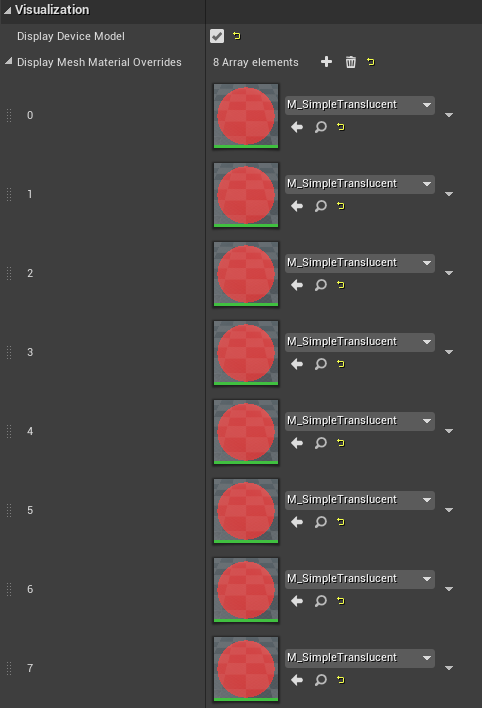
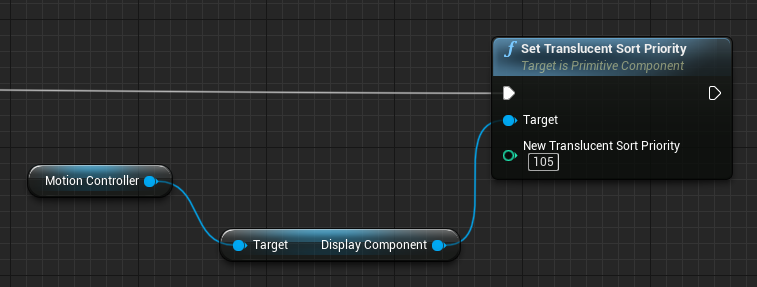
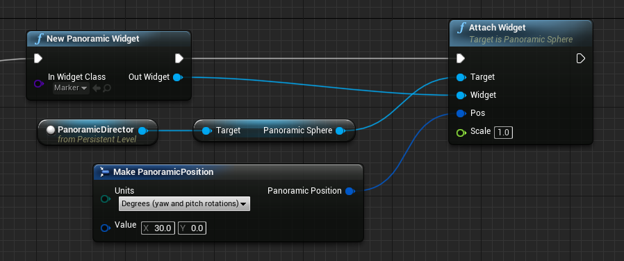
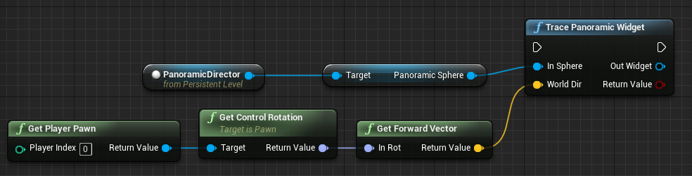

|
UE5 360 Stereo Panoramic Player 1.2.3
Create interactive Media Players and Virtual Tours for mono and stereo 360 panoramic images and videos in Unreal Engine 5.
|
Loading...
Searching...
No Matches
|
UE5 360 Stereo Panoramic Player 1.2.3
Create interactive Media Players and Virtual Tours for mono and stereo 360 panoramic images and videos in Unreal Engine 5.
|
List of answers to frequently asked how-tos.
NOTE Starting from Version 1.1.0, the plugin supports a new Opaque rendering mode to simplify drawing 3D objects inside a panoramic sphere. Read 'Blend mode' for more information. Below instructions apply when using the default ESphereBlendMode::Translucent mode.
Following how UE5 renders Translucent objects, to correctly draw the Panoramic Sphere over a generic 3D environment, we make the following adjustments to all objects needed to be shown as part of a Panoramic Sphere (like the Sphere and Widgets):
Note that, to guarantee a color-corrected output of the panoramic assets, we also tune some rendering settings that impact the rendering of 3D objects (see APanoramicSphere::OverwriteRenderingSettings()). If needed, you can update them after calling the Play()/End() methods.
ANSWER To render a 3D object inside the Panoramic Sphere (including a standard UE5 VR motion controller), you must:
TranslucentSortPriority property to a value >=200 (you can find the property in the 'Rendering > Advanced' section of the StaticMeshComponent detail panel).

Rendering the VR motion controllers inside the Panoramic Sphere could require some extra work if you're using the visuals supplied by UMotionControllerComponent, as UMotionControllerComponent doesn't make the underlying UMeshComponent directly accessible.
The simplest solution is to provide a custom mesh setting the property CustomDisplayMesh, configuring it as described above. If instead you want/need to use the visuals provided by UMotionControllerComponent, then further work from your side is needed.
For the HTC Vive in UE4.26 for example, you can override the 8 used material slots through the exposed property 'Display Mesh Material Overrides' (see screenshot above). You can then set the TranslucentSortPriority property acting on the component named DisplayComponent (see screenshot above for doing it from Blueprint). As this is a private property exposed only to the UE4 Reflection system, accessing it from C++ is more complex:
As all the above information are implementation dependent, they could not apply when using motion controllers other than the ones of HTC Vive, or versions of Unreal Engine other than the indicated one.
You can add any desired UMG widget to a panoramic sphere, to act as a custom interactive hotspot or simple aesthetic element. Any manually added UMG widget must be managed directly by the user, that must both check for possible interactions and delete it when no longer needed.
To add a custom UMG widget to a panoramic sphere (note that you can access the Panoramic Sphere used by a Panoramic Director accessing its PanoramicSphere property):
UPanoramicWidgetComponent, specifying the UMG widget to display.DestroyComponent() on the widget component when no longer needed).
To detect if the user is pointing/looking at the Panoramic Widget, you can call TracePanoramicWidget().

When the Panoramic Widget is no longer needed, you must dispose it calling DestroyComponent().